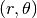
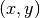
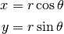
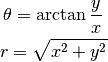
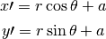
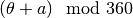
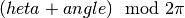
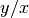

rotaplot – Cartesian/Polar Plot Rotator¶
Analysis¶
From the introduction:
CARTESIAN/POLAR PLOT ROTATOR by George Murphy VE3ERP
Y «0°
-x │ +x
+y │ +y
270°» X───── * ─────X «90°
-x │ +x
-y │ -y
Y «180°
This program rotates a plotted point or pattern of plotted points about the
junction * of the x and y axis of the plot. The new locations are indicated in
both cartesian and polar coordinates.
Coordinates may be entered in any unit of measure. All entries must be in the
same units.
This is a set of common transformations.
Input conversion.
Polar  to Cartesian 

Cartesian to Polar

Rotation through angle, a.

Display Cartesian and Polar.
Output format:
┌─────────────── Cartesion Plot ───────────────┐│┌──────── Polar Plot ────────┐
┌───── rotate from ────┐ ┌───── rotate to ─────┐│ ┌─ rotate angle ─┐
-x- -y- -x- -y- │ Vector ┌ from ┐ ┌─ to ─┐
───────────────────────────────────────────────────────────────────────────────┼
The display includes proper  of the resulting angle.
Implementation¶
Note that polar to Cartesian and Cartersian to polar conversions are part of cmath. These apply to the complex plane.
hamcalc.math.rotaplot – Cartesian/Polar Plot Rotator
Conversions between Polar and Cartesian.
Plus rotation of polar coordinates with proper .
Test Cases
>>> import hamcalc.math.rotaplot as rotaplot
>>> import math
>>> rotaplot.cartesian_to_polar( 5, 7 )
(8.602325267042627, 0.9505468408120752)
>>> r, theta = _
>>> math.degrees(theta)
54.46232220802562
>>> rotaplot.polar_to_cartesian( 8.602, math.radians(54.46) )
(5.000094638769196, 6.999532670353896)
>>> rotaplot.rotate( 8.602, math.radians(54.46), -math.radians(54.46) )
(8.602, 0.0)
>>> rotaplot.polar_to_cartesian( *_ )
(8.602, 0.0)
>>> rotaplot.rotate( 8.602, math.radians(54.46), math.radians(35.54) )
(8.602, 1.5707963267948966)
>>> r, theta = _
>>> math.degrees(theta)
90.0
- hamcalc.math.rotaplot.cartesian_to_polar(x, y)[source]¶
Convert Cartesian (x, y) to polar (r, theta)
Parameters: - x – x
- y – y
Returns: r,theta coordinates in radians
Legacy Quirks¶
Consider this line:
1100 W=ATN(ABS(X)/ABS(Y))
That appears to be completely incorrect.
The general approach is “opposite”/”adjacent”, .
Lines 1180 and 1190 recompute the input values X, and Y. Not really necessary, but there it is.
Finally, there’s a bunch of clever repositioning of the cursor to fill in the nice tabular display of points. Not easy to do with simple stdio functions.